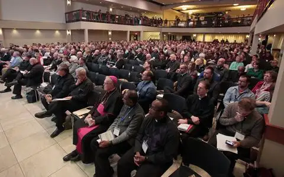
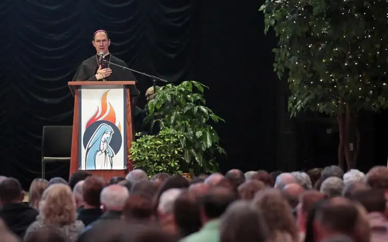

FARGO — Challenge and hope commingled at a recent gathering of about 750 Catholic leaders and parishioners from the Fargo and Crookston, Minn., dioceses.

Ashley Grunhovd, the Fargo Diocese evangelization director, said the Convocation of Parish Leaders that took place last week at Fargo’s Avalon Events Center highlighted “missionary discipleship” and what it means to live and share the Christian faith with others.
Bishop Michael Hoeppner of Crookston celebrated the opening Mass, noting how Jesus “called (the apostles) from their fishing to follow him,” an invitation carrying a sense of immediacy.
Later, Bishop John Folda of Fargo said that though the church is to be in “a constant state of being sent, as Christ, into the world,” too often, we’re viewed as joyless or dour. He emphasized that all Christians, not just a select few, are called to share the gift we’ve received.
But he also acknowledged challenges to this mission, notably sexual abuse scandals.

“We’re aware of it; we’re disturbed by it; we’re pained. The failure of some of our church leaders has caused great harm, and I don’t know of a single bishop that thinks this is no big deal,” Folda said, adding, “We’re committed to dealing with it.”
This abuse may well be the biggest trial the church will confront in this generation, Folda continued, and yet, “We can’t allow the sins of our leaders to keep us from sharing the joy of faith.”
The Rev. Frank S. Donio of Washington, D.C., an evangelization consultant for the United States Conference of Catholic Bishops, said that because of the “hemorrhaging” being seen in and from our churches, the church needs to act now. It starts by being fed with the Eucharist at Mass, but must not end there, he said, sharing stories about his Italian-American grandmother who lived her life in prayer, but showed the fruits in simple ways.
“She always had a good word for someone,” he said. “She (evangelized) by the witness of her life.”
Donio added, “It’s important to witness to the fact that even in our brokenness, scandal and difficulty, we still have the Eucharist, and we go forth from there because we are sent.”
Most of this happens through ordinary, everyday encounters, Donio said, suggesting, “Imagine if we flooded social media with faith and good things and not just cat videos.”
The Rev. Thomas Richter, pastor of Queen of Peace Catholic Church in Dickinson, N.D., threw out some hard facts. Fifty years ago, he said, more than 50 percent of Catholics attended Mass regularly; now, that number stands at 12.5 percent.
“If you’re not discouraged yet, I’ll get you there,” he continued. “According to the numbers, 10 percent of millennial Catholics go to Mass. These are the leaders of our Church… they’re the ones forming our families and passing on the faith.”
He gave similarly low statistics for Catholic couples receiving the sacrament of matrimony, despite a rise in the Catholic population worldwide.
“For me, it’s no mystery why we don’t evangelize,” Richter said. “We don’t have faith; we have not entered into Christ deeply enough,” adding that too many Catholics “relate to Jesus as an idea in their minds.”
“The devil thinks about Jesus all the time. What he doesn’t do is relate to him through his heart…he doesn’t bring his knee to Jesus, or get out of himself,” Richter said. “That, I believe, dear people, is what makes us hold back.”
Sharing our faith is simply about “one starving man who’s found where the bread is and wants others to find it, too,” he said. “He doesn’t need to know how to bake bread or dig wells, but just to demonstrate that his hunger is being fed and his thirst quenched.”
Robert Reinpold, 27, of Halstad, Minn., said the scandals being revealed have been frustrating, but they haven’t detracted from his faith.
“Those who perpetrate that, they don’t represent the church,” he said. “I mean, none of us represents the church when we sin, right?”
While grateful for the convocation, Reinpold said he would have liked more attention to liturgy, naming the sense of “verticality” as the most glaring lack in the church today.
“We’ve focused on the horizontal, person to person, but we’ve lost sight of connecting with God,” he said.
As a millennial, he said many in his generation of Catholics feel “cheated,” having been deprived of some of the “glory of Catholicism, like the incense and bells, minimized after the Second Vatican Council.”
“I’m not saying I want to go back, but we’ve lost a lot of what it means to be Catholic,” he said.
Reinpold pointed to the “we’ve always done it that way” mentality as another obstacle.
“That’s hard for us to penetrate,” he said. “For us, it’s a waiting game. We might not have the influence in the parish right now, but we’re going to outlive those who do.”
Jordan Hjelle, 26, a parishioner from St. Michael’s Church in Grand Forks, N.D., agreed that “getting back to the basics” is crucial. A convert from Protestantism, he said the Mass is what compelled him toward Catholicism.
“Coming to the realization that we have the body, blood, soul and divinity of Jesus sitting before us, and how important and beautiful that can be, is something so unique to us as Catholics,” he said.
Rob Waletzko, of Lisbon, N.D., said he took a vacation day to attend the event but didn’t regret it, noting that he was struck with the idea that without evangelization, we’re dead spiritually.
“Evangelization isn’t, ‘Oh, it’s 10 o’clock, time to evangelize,'” he said. “It’s when the moment is right, and God will help you through that.”
“The mission is mysterious, and it can be frustrating at times,” Folda said in concluding remarks. “But it can also be wonderful, and I hope we can go out of here with a spirit of joy.”
The event also included several panels that addressed obstacles to evangelization, including within our own families, witness talks by lay faithful and a praise and worship evening.
For the sake of having a repository for my newspaper columns and articles, I reprint them here, with permission, a week after their run date. The preceding ran in The Forum newspaper on Dec. 8, 2018.